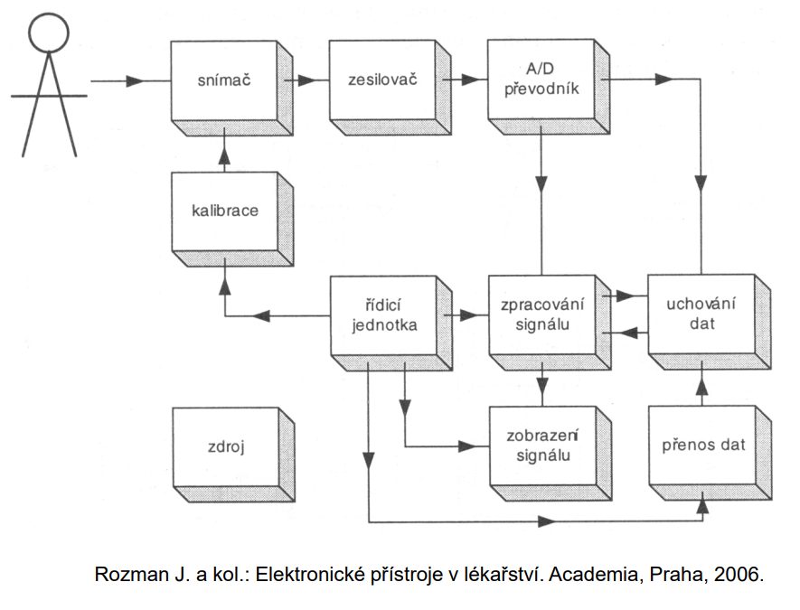

Co je lékařský přístroj?
Elektronické lékařské přístroje jsou technická zařízení, která: -
Využívají elektrické, elektronické nebo elektromagnetické principy -
Slouží k diagnostice, terpaii, chirurgii nebo náhradě funkcí orgánů
Základní rozdělení podle účelu:
- Diagnostické systémy
- Slouží k měření a sledování životnách funkcí + získávání info o
zdravotním stavu
- EKG, EMG, tonometry
- Energie jde od pacienta k přístroji
- Terpateutické systémy
- Slouží k aktivnímu ovliv%nování stavu pacienta
- Kardiostimulátor, radioterapie
- Energie jde od přístroje k pacientovi
- Chirurgické systémy
- Při operačních zákrocích
- Anestezie, laserové systémy, ultrazvuková chirurgie
- Podpora a náhrady orgánůů
- Nahrazují nebo podporují funkci člověka
- Naslouchadla, kochleární implantáty
Klasifikace biomedicínských přístrojů:
- Podle měřené veličny:
- Tlak
- Průtok
- Teplota
- Elektrické signály
- Podle principu snímání:
- Rezistivní
- Kapacitní
- Induktivní
- Ultrazvukové
- Elektrochemické
- Podle orgánového systému:
- Kardiovaskulární
- Respirační
- Endokrinní
- Nervový
Způsoby měření
- Přímé měření
- Měříme přímou pořadovanou veličinu
- Teplota teploměrem
- Výhoda: jednoduchost
- Nevýhoda: Často invazivní nebo nepřesné
- Nepřímé měření
- Měříme jinou veličinu, ze které výsledek vypočítáme
- Krevní tlak, laserové měření vzdálenosti
- Komparativní měření
- Porovnání se známou hodnotou - cílem je to , aby rozdíl mezi měřenou
a známou hodnotou byl nulový
Vyhodnocení měření
- Střední hodnota - typická hodnota: \[\mathrm{\overline{X}=\frac{1}{N} \sum
X_i}\]
- Medián:
- Prostření hodnota, která je odolná vůči extrémům
- Modus:
- Variabilita měření
- Rozptyl = míra rozptýlení hodnot kolem průměru
- Směrodatná odchylka = prakticy používaná míra variability
- Standardtná chyba = vyjadřuje nejistotu průměru
Chyby měření
- Systematická chyba
- Stálá, daná metodou nebo přístrojem - nelze ji odstranit
statisticky
- MAP
- Náhodná chyba
- Proměnlivá, způsobená rušením - lze změnit opakováním
Charakteristiky lékařských přístrojů
Soubor parametrů umožňující vzájemně srovnávat jednotlivé
přístroje a kvantifikovat jejich vlastnosti
Statistické parametry - popisují chování systému
pro stejnosměrné nebo velmi pomalu se měnící vstupní veličiny
- Přesnost - jak blízko je výsledek ke skutečné
hodnotě
- Rozptyl - schopnost přístroje při opakovaném měření
vracet pro stejnou vstupní veličinu stejný nebo alespoň velmi podobný
výsledek
- Chyba měření - rozdíl mezi naměřenou a skutečnou
hodnotou - např. \(\pm1~\%\) z
naměřeného údaje
- Rozlišení přístroje - počet číslic, které přístroj
zobrazuje (přístroj, který zobrazí naměřený údaj 2,3456 V má větší
rozlišení než přístroj, který zobrazí 2,35 V) - první rozlušuje změnu
0,0001 V - přístrojj 1 dokáže zobrazit menší změny napětí
- Rozlišení a citlivost - nejmenší změna vstupní
veličny, kterou přístroj dokáže zaznamenat, např. u A/D převodníku 1 LSB
- od jak malé změny už se výstup změní
- Reprodukovatelnost - schopnost přístroje naměřit v
různém čase při stejném vstupu stejnou hodnotu
- Lineární přenosová funkce - mezi vstupem a výstupem
platí vztah \(y=ax + b\), přičemž \(a\) je směrnie (citlivost) a \(b\) je posun
- Stejnosměrný posun - i když je vstup nulový, výstup
nulový nebude = aditivní chyba
- při měření teploty teploměr vždy o 1 stupeň
- Změna citlivosti
- Jak moc se mění výstup při změně vstupu
- Drift citlivosti = \(a\) se mění v
čase a přístroj zesiluje jinak, než má = multiplikativní chyba \[y = (a + \Delta a) \cdot x\]
- Linearita
- Linearita přístroje znamená, že jeho přenosová funkce spl%nuje
podmínky aditivity a homogenity, tedy že výtup je úměrný vstupu
- nechť platí: \[\begin{align}
y_1 = f(x_1) \\
y_2 = f(x_2)\end{align}\]
- Systém je lineární, pokud platí podmínka additivity \(y_1 + y_2 = f(x_1 + x_2)\) a homogenity
\(K \cdot y_1 = f(K \cdot x_1)\) a
pokud tohle platí, přenosová funkce má tvar: \(y = a \cdot x + b\)
- Linearita je důležitá u lékařských přístrojů, protože umožňuje
jednoduchou kalibraci a správnou interpretaci
- Vstupní rozsah
- Rozsah hodnot vstupní veličiny, které může přístroj přijmout bez
poškození a bez ztráty funkčnosti
- Dynamický rozsah
- Rozsah hodnot vstupu, ve kterém je přístroj schopen měřit se
specifikovaným parametry (s danou přesností, šumem, apod.) - vstupní
rozsah: \(\mathrm{\pm 5~mV}\)
- Vstupní impedance
- jak moc přístroj zatěžuje měřený systém
- Ideální měření = přístroj neovliňuje měřený systém
- V medicíně měříme:
- tlak
- průtok
- …
- Proto zobecněná impedance, neměříme jen elektriku
- Veličina typu úsilí
- Tlačí, nutí a sama o sobě neznamená pohzb = napětí, síla, tlak
- Veličina typu flow
- Vyjadřuje pohyb, děj = proud, rzchlost
- Jejich součin dává výkon - \(P = X_{d1}
\cdot X_{d2}\) Výkon = kolik energie za jednotku času odebereme
ye systému (např. \(\mathrm{P = U \cdot
I}\))
- Měřené veličiny se často mění v čase a mají harmonický průběh, proto
impedanci definujeme jako podíl fázorů: \(Z =
\frac{X_{d1}}{X_{d2}}\)
- \(P=X_{d1} \cdot
{X_{d2}}=\frac{X_{d1}^2}{Z}=Z \cdot X_{d2}^2\)
- Pokud měřím veličinu typu úsilí, tak čím větší impedance, tím menší
výkon a při veličině typu flow je to naopak
Dynamické parametry
- popisují chování při změnách vstupu v čase
- pouze ve vyjímečných případech jsou biologické signály stejnosměrné
nebo jen velmi pomalu se měnící (např. tělesná teplota), obvzkle jsou to
signály se spektrem frekenci od jednotek do desítek Hz
- časové závislosti mezi vstupní a výstupní veličinou popisujeme
pomocí přenosových charakteristik
- vztah mezi vstupné veličinou a výstupem ve frekvenční (operátorové)
oblasti popsuje přenosová funkce
- Přenosové charakteristiky:\[
\begin{aligned}
P(p) &= \frac{Y(p)}{X(p)} \\
P(p) &\ldots \text{přenosová funkce v Laplaceově oblasti} \\
&\ldots \text{popisuje časově invariantní systém} \\
X(p) &\ldots \text{obraz vstupu} \\
Y(p) &\ldots \text{obraz výstupu} \\
\end{aligned}
\]
- Impulsní charakteristika w(t)
- časový průbeh výstupu systému po působení jednotkového impulsu na
vstupu - Diracova
- Diracův impulz = nekonečně krátký a nekonečně vysoký, který má
jednotkovou plochu \[w(t) = \mathcal{L}^{-1}
\left\{P(p)\right\}\]
- Jak rychle systém reaguje
- Přechodová charakteristika
- časový průběh výstupu po náhlé změně vstupu na jednotkový skok:
\[
a(t) = \mathcal{L}^{-1}\left\{\frac{P(p)}{p}\right\}
\]
- jednotkový skok = náhlá změna vstupu z 0 na 1 a reprezentuje zapnutí
signálu
- jednotkový skok: \[I(t) =
\int_0^t\delta(\tau)~dr\]
- Přechodová charakteristika je integrál impulsní charakteristiky
- Př: u EKG zesilovače - pokud je impulsní charakteristika příliš
široká, tak se rozmaže QRS, pokud je pomalá přechodová char. zpoždění
detekce
- Přenosová funkce \[P(j\omega)=\frac{Y(jw)}{X(j\omega)}\]
- jak systém mění amplitudu a fázi signálu v závislosti na
frekvenci
Obecné schéma lékařského přístroje
- Diagnostické \(\times\)
Terapeutické
- Diagnostické
- Slouží k monitorování životních funkcí
- Transport signálu (energie) je převážně od sledovaných životních
funkcí pacienta
- Signály jsou velmi malé a zdroj má vnitřní velký odpor
- EEG, EKG 
- Zdroj - napájí celý systém
- Pacient
- Snímač převádí neelektrickou veličinu na elektrický
signál (elektrody, tlakový senzor) a ovlivňuje ho přesnost, šum
- Kalibrace - zajišťuje, že výstup odpovídá správným
fyzikálním jednotkám - koriguje offset a citlivost
- Zesilovač - biologické signály jsou v řádu \(\mathrm{\mu V}\) nebo \(\mathrm{mV}\), tudíž je zesiluje na úroveň
vhodnou pro A/D převodník
- A/D - převádí analogový signál na digitální - má
nějaké rozlišení, vzorkovací frekvenci - nejsou vlnky, ale čísla
- Zpracování signálu - digitální filtrace a výpočty -
tady vznikají parametry pro lékaře - tepová frekvence
- Řídící jednotka - řídí celý stroj a synchroniyuje
měření, zpracování, kalibraci a komunikaci
- Uchování dat - typicky je to interní paměť
- Přenos dat - přenos na PACS